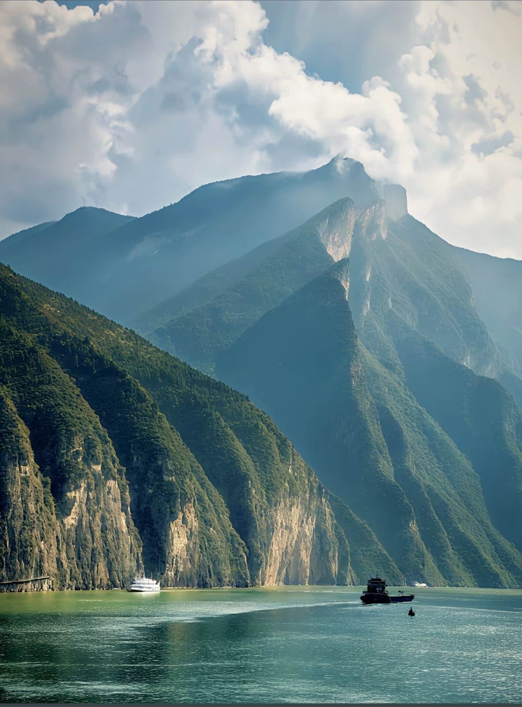
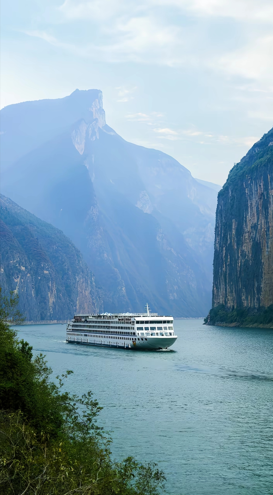
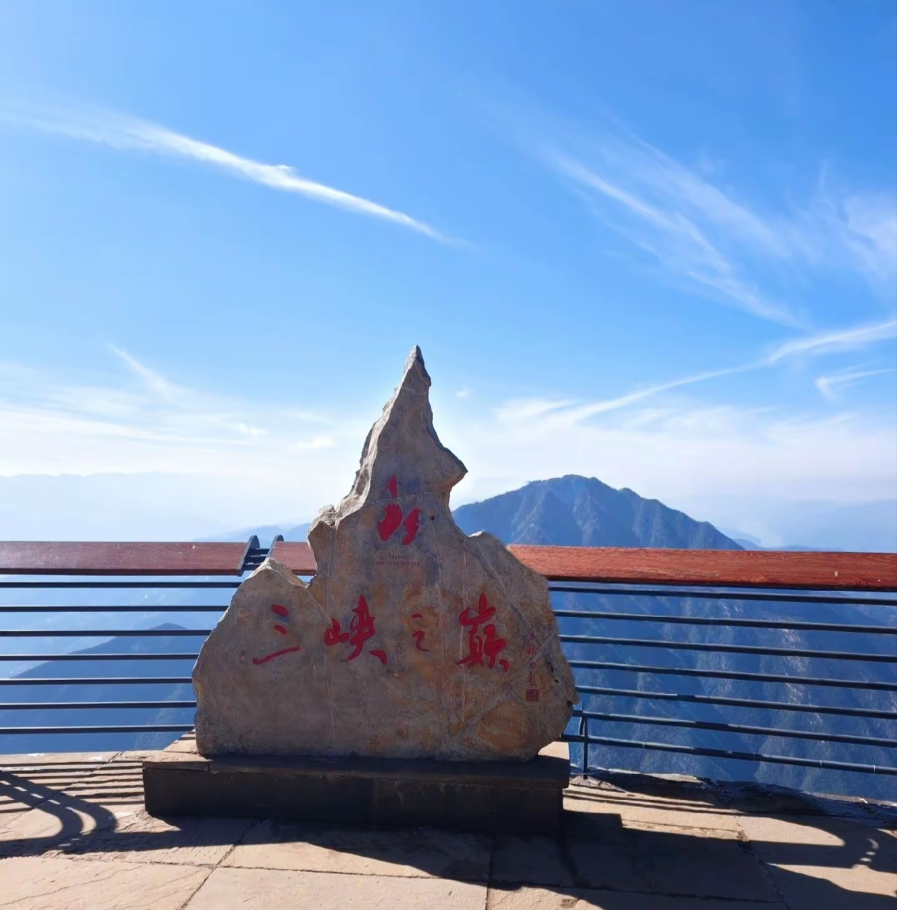
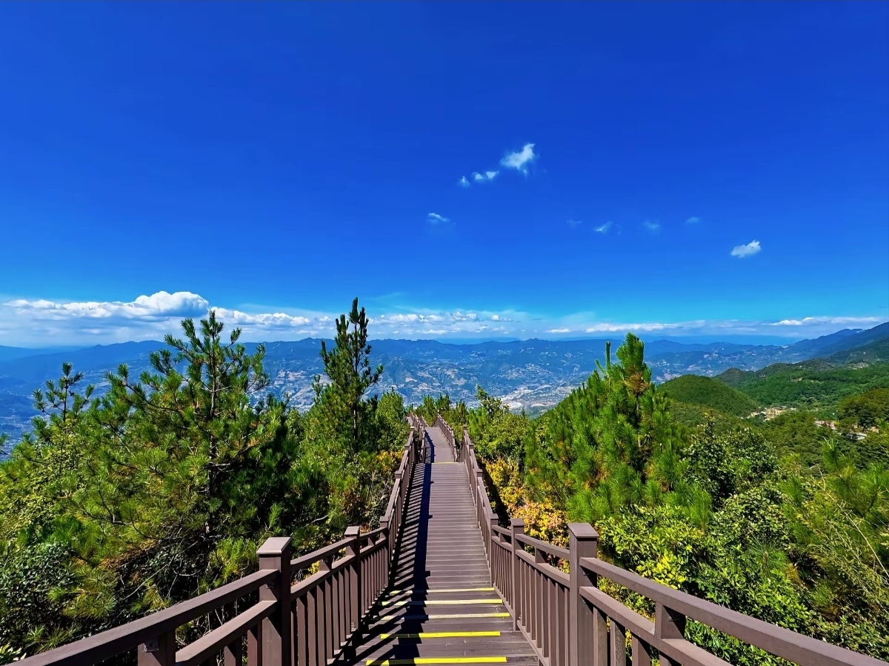
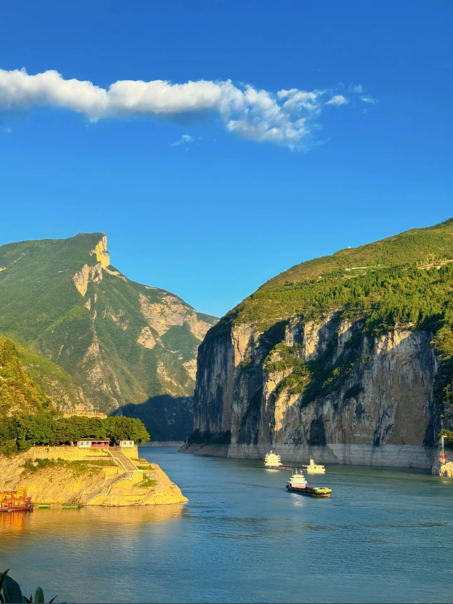
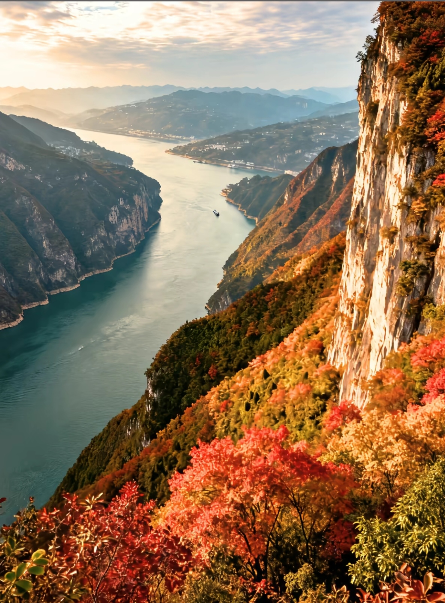

The Three Gorges is a spectacular 193-kilometer stretch of the Yangtze River in central China, comprising Qutang Gorge, Wu Gorge, and Xiling Gorge. The region features towering limestone cliffs (up to 1,000m high), narrow ravages, and the world's largest hydroelectric dam — the Three Gorges Dam. For centuries, the gorges have inspired Chinese poets and painters. Today, cruises through the gorges offer breathtaking scenery, ancient temples, hanging coffins, and the engineering marvel of the dam itself. The area was significantly altered by the dam's rising waters (completed 2009), but the dramatic cliff scenery remains stunning.






By Air: Chongqing Jiangbei Airport - flights from Beijing (2.5h, ¥800), Shanghai (3h, ¥700), Guangzhou (2h, ¥600). By Train: High-speed from Chengdu (1.5h, ¥150), Wuhan (5h, ¥300).
By Air: Yichang Sanxia Airport - flights from Beijing, Shanghai, Guangzhou. By Train: From Wuhan (2h, ¥100), from Yichang to Chongqing (upstream cruise).
From Chongqing: Most cruises depart from Chaotianmen Dock (central Chongqing). Arrive 2 hours before departure. Taxi from airport: ¥50-70.
From Yichang: Day cruises to Three Gorges Dam (5-6h, ¥200-300). From Chongqing: Day trips to nearby gorge sections. Full cruise recommended for complete experience.
Route: Chongqing → Fengdu (Ghost City) → Qutang Gorge → Wu Gorge → Three Gorges Dam → Yichang
Duration: 3-4 days downstream (faster with current)
Best for: First-time visitors, complete experience
Route: Yichang → Three Gorges Dam → Wu Gorge → Qutang Gorge → Chongqing
Duration: 4-5 days upstream (slower against current)
Best for: More time to enjoy scenery
From Yichang: Bus to dam site → Tour dam facilities → Ship lock experience → Return
Duration: 5-6 hours
Best for: Short on time, engineering enthusiasts
Combine: Chongqing (2 days) → Three Gorges cruise (3-4 days) → Wuhan or Yichang (1-2 days)
Best for: Comprehensive Yangtze experience
Location: On board cruise ships
Specialty: Buffet meals included in cruise price, Some à la carte options
Hours: Breakfast 7-9 AM, Lunch 11:30-1:30 PM, Dinner 6-8 PM
Location: Chongqing city center
Specialty: Famous Chongqing hotpot, Spicy noodles, Street food
Hours: 11:00 AM - 11:00 PM
Location: Fengdu, Badong, and other port towns
Specialty: Local fish dishes, Regional specialties
Hours: 10:00 AM - 9:00 PM
Location: Yichang city (end of cruise)
Specialty: River fish, Local vegetables, Hubei dishes
Hours: 11:00 AM - 10:00 PM
Location: On board cruise ship
Features: Twin bed, Private bathroom, Window
Note: Most popular choice; all meals included
Location: Upper decks of cruise ship
Features: Suite, Balcony, Premium dining, Butler service
Note: Best experience; limited cabins
Location: Near Chaotianmen dock
Features: Full amenities, Easy dock access
Distance to Dock: 5-15 min walk or short taxi
Location: Yichang city center
Features: Comfortable, Near transport hub
Note: Good base for dam day trips